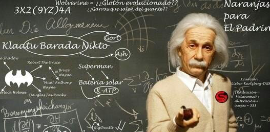

挫哥睡前故事
July 20, 2017 / chenxin / 0 Comments

一群伟大的科学家死后在天堂里玩藏猫猫，轮到爱因斯坦抓人，他数到100睁开眼睛，看到所有人都藏起来了，只见伏特趴在不远处。
爱因斯坦走过去说：“伏特，我抓住你了。”
伏特说：“不，你没有抓到我。”
爱因斯坦：“你不是伏特你是谁？”
伏特：“你看我身下是什么？”
爱因斯坦低头看到在伏特身下，居然是安培！
伏特：“我身下是安培，我俩就是伏特/安培，所以你抓住的不是我，你抓住的是欧姆！
爱因斯坦反应迅速，于是改口喊，“欧姆，我抓住你了！”
可是伏特和安培毕竟是欧姆的好哥们，于是，伏特和安培一个鱼跃站了起来，但是仍然紧紧抱在一起，爱因斯坦大惑～
他俩不紧不慢地说，现在，我们不再是欧姆，而是伏特×安培， 变成瓦特了～
爱因斯坦觉得有道理，于是喊，那我终于抓到你了，瓦特！
这时候，瓦特躲在角落里慢慢悠悠地说：“你看他俩这样抱着已经有好几秒了，所以，你抓得不是瓦特，而是瓦特×秒，是焦耳啦～”
这时，他看到牛顿站在不远处，爱因斯坦于是跑过去说：“牛顿，我抓住你了。”
牛顿：“不，你没有抓到牛顿。”
爱因斯坦：“你不是牛顿你是谁？”
牛顿：“你看我脚下是什么？” 爱因斯坦低头看到牛顿站在一块长宽都是一米的正方形的地板砖上，不解。
牛顿：“我脚下这是一平方米的方块，我站在上面就是牛顿/平方米，所以你抓住的不是牛顿，你抓住的是帕斯卡”
爱因斯坦倍受挫折，终于忍无可忍地爆发了，于是飞起一脚，踹在牛顿身上，把牛顿踹出了那块一平米的地板砖， 然后吼到：“说！你还敢说你是帕斯卡？？”
牛顿慢慢地从地上爬起来，说：“不，我已经不是帕斯卡了，你刚刚让我牛顿移动了一米的距离，所以，我现在也是焦耳了”
焦耳这次学聪明了，一把扑到了阿伏伽德罗在自己身下，说： “你看，我现在是J/mol啦”，正当爱因斯坦思考J/mol是什么东西的时候，亥姆霍兹和吉布斯这两个自由能吵了起来，都说是对方。
为了不至于两败俱伤，他们一脚把开尔文踹到焦耳下面，把阿伏伽德罗顶了出来。
“看！”他俩说，“现在是J/K，是熵啦，要抓就抓克劳修斯吧”
游戏继续 这次是安培被爱因斯坦发现了，眼看安培就要被抓了。
安培顺势往地上一躺，伸直身体对站在身边不远处的爱因斯坦说：“等等，我在你站的地方产生了磁场。
”正当爱因斯坦在考虑该抓高斯还是特斯拉的时候，发现他俩一人找了一块地板砖抱着，说：“不麻烦你老了，我们现在是磁通量B·S，去找韦伯吧。”
等到爱因斯坦要抓住韦伯的时候，发现韦伯在做深蹲。
爱因斯坦问：“你干嘛呢。”
韦伯回答说：“你没看到我一会儿变大，一会儿变小，我在产生感应电动势呢。”
这时伏特一下子慌了，一把抓住密立根的衣领，说：“你成天拿个油壶乱喷什么。”
“测定元电荷。”密立根回答道。
“太好了！”伏特一把抱住密立根说，“从现在起，我们就是eV，也就是焦耳。
” 靠，今天是邪了门啦”焦耳嘀咕道 一把把赫兹压在身下，说： “看，现在是E/v，是普朗克啦” |
普朗克也不是好惹的，他突然发现远处有个来自东方的老头在地上写下了22/7和355/113，很是得意，一打听此人姓祖，心里大喜，急忙跑过去，把这两个分数照抄了一遍，趴在这四个分数上面。
对刚气喘嘘嘘赶来的爱因斯坦说： “看现在是h/4pi,啦”
“那又怎样？”爱因斯坦问。 “是我的好哥们海森堡教我的，说这样我就不是我了，有什么事尽管找他。”
“好，那他在哪里？”
“这个，还真说不准。”
爱因斯坦恼羞成怒，正准备对普朗克大打出手。
普朗克说： “等等，海森堡有个姓薛的好哥们，就躲在前面的箱子里。”
“这个箱子连通风口都没有，难道不会憋死吗？” 爱因斯坦问。
“这个就得你亲自去打开看看了。